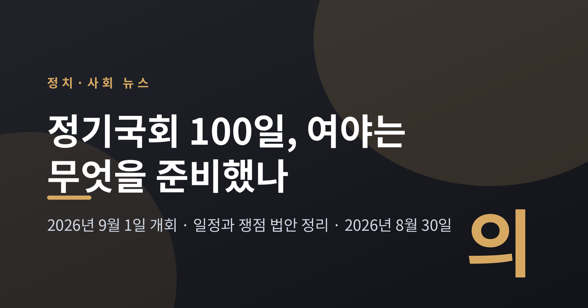
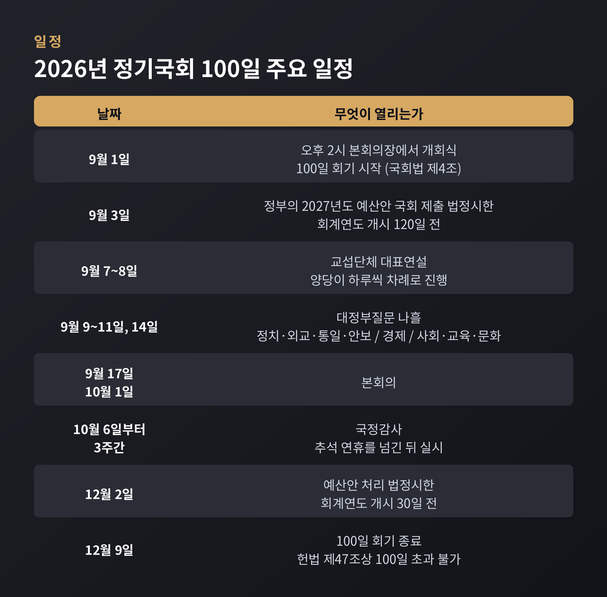
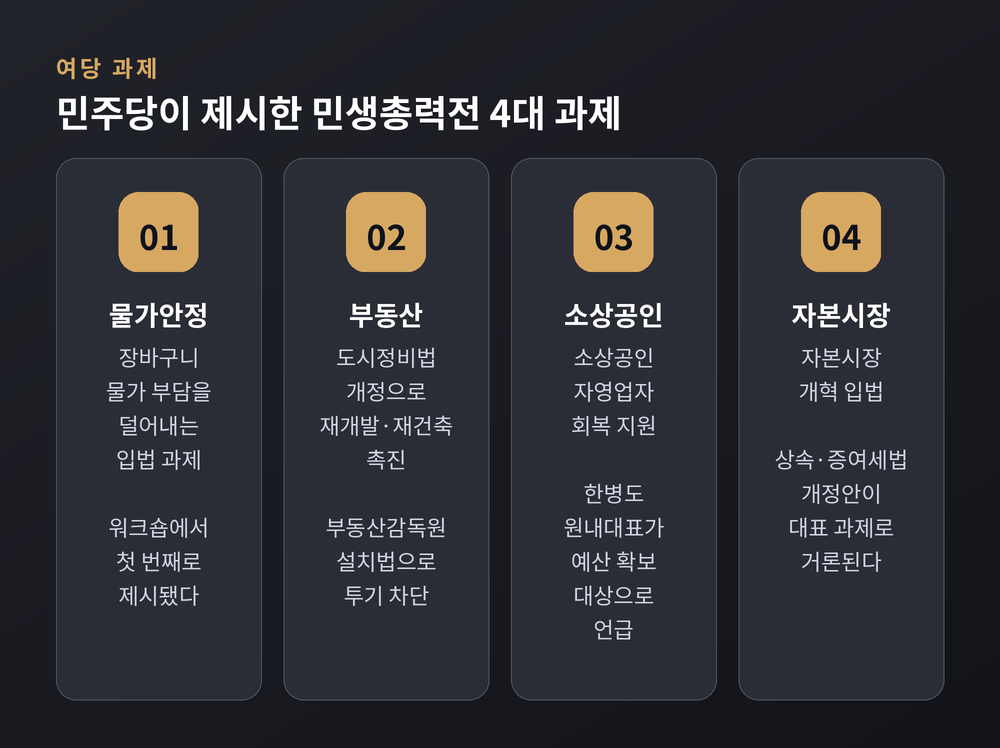
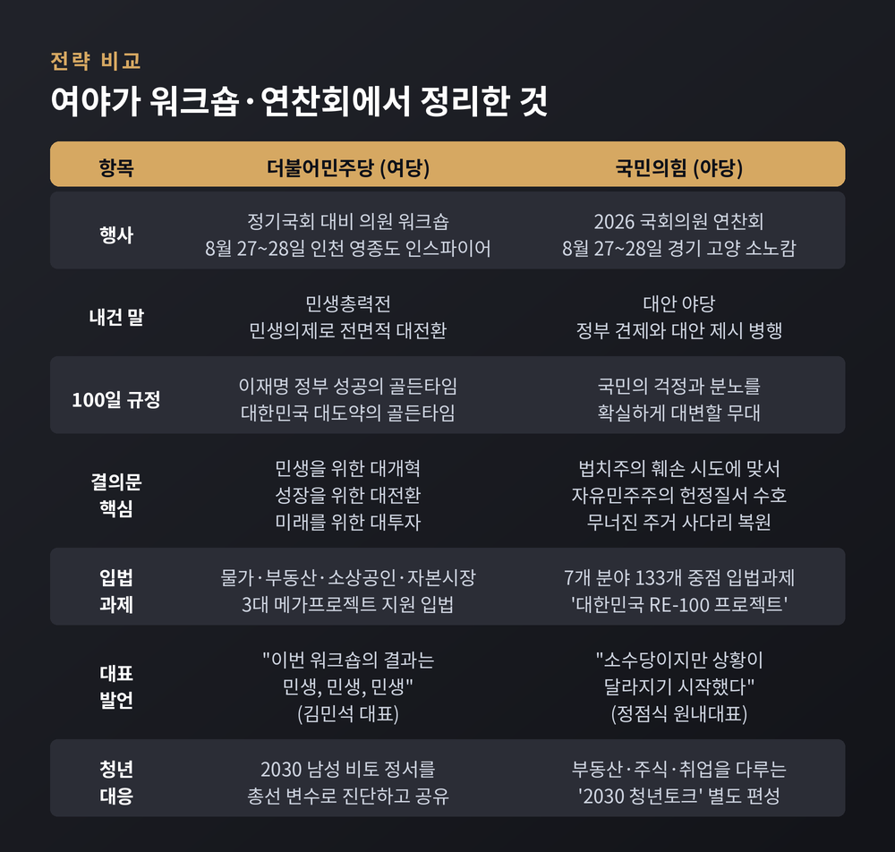
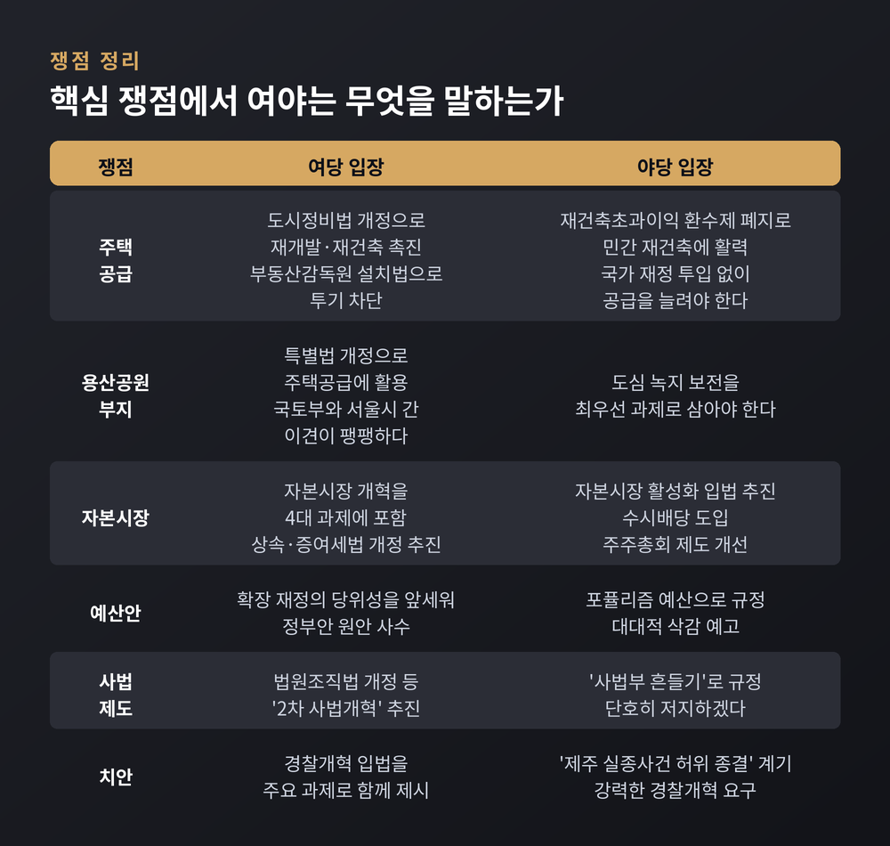
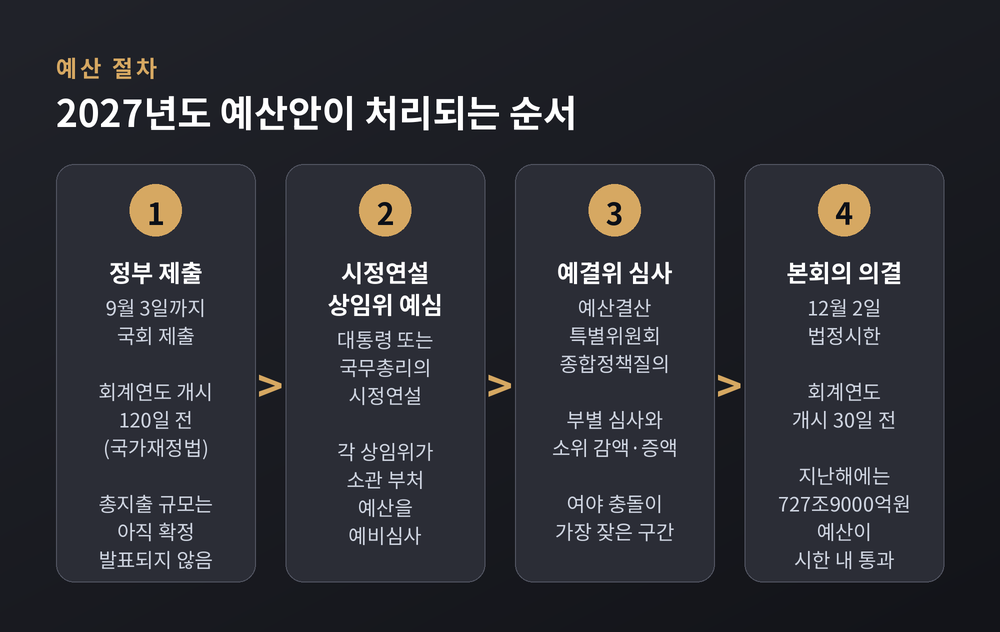
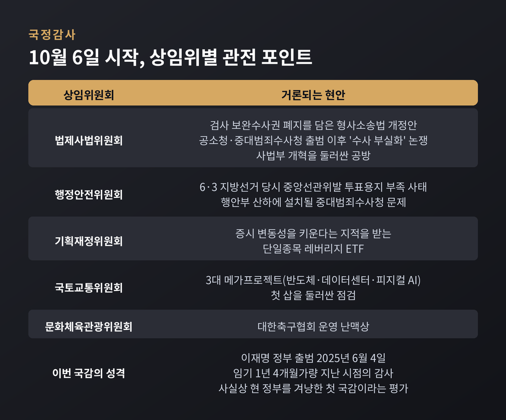

9월 1일 정기국회가 문을 엽니다. 여야는 개회 나흘 전 각각 워크숍과 연찬회를 열고 100일 동안 무엇을 할 것인지 먼저 밝혀두었습니다. 이번 글에서는 양쪽이 내놓은 전략과, 실제로 부딪히게 될 쟁점 법안의 구도를 정리해 보겠습니다.

정기국회는 임시국회와 다릅니다. 헌법 제47조는 정기회를 매년 한 번 소집하도록 정하고, 회기는 100일을 넘길 수 없다고 못 박았습니다. 국회법 제4조는 그 집회일을 9월 1일로 지정해 두었습니다. 올해 9월 1일은 화요일이므로 그대로 열립니다.
일정은 이미 상당 부분 확정됐습니다. 9월 1일 오후 2시 본회의장에서 개회식이 열립니다. 9월 7일과 8일에는 교섭단체 대표연설이 이어집니다. 9월 9일부터 11일까지, 그리고 14일까지 나흘간은 대정부질문입니다. 국정감사는 추석 연휴를 넘긴 10월 6일부터 3주간 진행됩니다.
그리고 12월 2일. 다음 해 예산안을 처리해야 하는 법정시한입니다. 정부가 예산안을 국회에 내야 하는 시한은 그보다 앞선 9월 3일입니다.
100일은 짧지 않지만, 저 일정표를 채우고 나면 실제로 법안을 다툴 시간은 생각보다 빠듯합니다.
더불어민주당은 8월 27일과 28일 인천 영종도 인스파이어 호텔에서 정기국회 대비 의원 워크숍을 열었습니다. 김민석 대표 체제가 출범한 뒤 처음 맞는 정기국회입니다.
당이 규정한 표현은 분명했습니다. 정기국회 100일은 '이재명 정부 성공의 골든타임'이라는 것입니다.
천준호 원내운영수석은 정기국회 운영방안을 보고하면서 네 가지를 대표 과제로 제시했습니다. 물가안정, 부동산 대책, 소상공인 지원, 자본시장 개혁입니다. 이주희 원내대변인은 천 수석이 "국민의힘의 방해로 국정과제 이행률이 30%대 초반에 머물고 있다"고 지적했다고 전했습니다. 다만 이 수치는 여당 원내지도부가 자체적으로 내놓은 진단이며, 제3자가 검증한 통계는 아닙니다.

김민석 대표는 워크숍 마무리에서 "이번 워크숍의 결과는 민생, 민생, 민생"이라고 했습니다. 또 "조만간 의원 전원이 당으로부터 구체적 미션을 부여받게 될 것"이라고 예고했습니다. 한병도 원내대표는 "고위 당정과 실무 당정을 정례화해 국정과제와 민생법안의 우선순위부터 처리 시한, 대야 협상 전략까지 빈틈없이 준비하겠다"고 밝혔습니다.
28일 채택한 결의문의 뼈대는 세 개였습니다. 민생을 위한 대개혁, 성장을 위한 대전환, 미래를 위한 대투자입니다.
흥미로운 대목은 따로 있습니다. 여당이 스스로 약점을 꺼내 놓았다는 점입니다. 워크숍에서는 2030세대 남성의 비토 정서가 차기 총선 승패를 가를 변수가 될 수 있다는 진단이 비중 있게 공유됐습니다. 이 원내대변인은 윤희웅 오피니언라이브 대표의 분석을 전하며 "청년 세대의 마음을 얻는 작업을 열심히 해나가야 할 것 같다"고 했습니다.
같은 기간 국민의힘은 경기 고양 소노캄에서 연찬회를 열었습니다. 방향은 두 갈래였습니다. 정부의 실정을 파고드는 동시에, 정책 대안을 내놓아 '대안 야당'의 역량을 보이겠다는 것입니다.
임이자 정책위의장은 7개 분야 133개 중점 입법과제를 추진하겠다고 밝혔습니다. 주거 안정, 경제 성장, 국민 재산 보호, 약자 보호, 국민 안전, 지역 균형발전, 청년의 미래입니다. 당은 이를 '대한민국 RE-100 프로젝트'로 이름 붙였습니다. 임 정책위의장은 "잘못된 정책을 바로잡고 국민의 삶을 지키는 대안 입법으로 채우겠다"고 말했습니다.
장동혁 대표는 "정기국회와 국정감사에서 국민의 걱정과 분노를 확실하게 대변해야 한다"고 했습니다. 정점식 원내대표는 "여전히 우리는 소수당이지만 상황이 달라지기 시작했다"며 "각 상임위에서 분야별로 무엇이 잘못됐는지를 조목조목 지적하고 대안을 제시해야 한다"고 당부했습니다.
눈길을 끈 장면도 있었습니다. 박근혜 전 대통령이 연찬회를 찾았습니다. 당 연찬회 참석은 2012년 이후 14년 만입니다. 그는 "밖의 적을 상대로 싸울 때 우리 내부의 분열만큼 무서운 적은 없다"며 단결을 주문했습니다.
야당도 청년층을 겨냥했습니다. 연찬회에는 부동산·주식·취업을 다루는 '2030 청년토크' 순서가 따로 마련됐습니다. 여야가 서로 다른 말을 하면서도 같은 곳을 보고 있는 셈입니다.

첫째는 부동산입니다. 여당은 재개발·재건축을 촉진하는 도시정비법 개정안, 투기를 막겠다는 부동산감독원 설치법을 밀고 있습니다. 야당은 재건축초과이익 환수제를 폐지해 민간에 활력을 주면 국가 재정을 따로 넣지 않고도 공급을 늘릴 수 있다고 봅니다. 용산공원 부지를 두고도 갈립니다. 여당은 주택공급 쪽을, 야당은 도심 녹지 보전을 앞세웁니다. 이 사안은 국토교통부와 서울시 사이에서도 이견이 팽팽한 것으로 전해집니다.
둘째는 자본시장입니다. 여기서는 방향이 겹칩니다. 여당은 자본시장 개혁을 4대 과제에 넣었고, 야당도 수시배당 도입과 주주총회 제도 개선을 담은 자본시장 활성화 입법을 예고했습니다. 다만 배당소득 분리과세의 적용 시기와 상법 개정의 범위 등 방법론에서는 아직 접점이 좁습니다.
셋째는 예산입니다. 정부는 800조원대 편성을 예고한 것으로 전해집니다. 2026년도 본예산 총지출이 727조9000억원이었으니 적지 않은 증가폭입니다. 다만 정부는 "2027년 예산안 총지출 규모 등은 확정된 바 없다"는 설명자료를 낸 상태여서, 아직은 관측 단계로 보는 편이 정확합니다. 여당은 확장 재정의 당위성을 앞세워 원안 사수를 말합니다. 야당은 포퓰리즘으로 규정하고 삭감을 예고했습니다. 반도체 호황에 따른 추가 세수를 담는 '미래대응기금'이 최대 격전지로 꼽힙니다.
넷째는 사법과 치안입니다. 여당은 법원조직법 개정 등 이른바 '2차 사법개혁'을 테이블에 올릴 방침입니다. 야당은 이를 '사법부 흔들기'로 규정합니다. 반대로 야당은 '제주 실종사건 허위 종결' 논란을 계기로 경찰개혁을 강하게 요구하고 있습니다.

예산은 정기국회에서 가장 시간을 많이 잡아먹는 일입니다. 정부가 9월 3일까지 예산안을 제출하면, 시정연설과 상임위 예비심사, 예산결산특별위원회 심사를 거쳐 12월 2일 본회의 의결로 마무리되는 구조입니다.
법정시한을 지키는 해도 있고, 넘기는 해도 있습니다. 지난해에는 12월 2일에 727조9000억원 규모의 예산이 본회의를 통과했습니다. 한병도 원내대표는 이번에도 "법정 시한 내에 차질없이 통과시키겠다"고 밝혔습니다.

국정감사는 흔히 정기국회의 꽃으로 불립니다. 지난 1년간의 국정 전반을 입법부가 들여다보는 자리입니다.
이번 국감이 특히 주목받는 이유가 있습니다. 이재명 정부는 2025년 6월 4일 출범했습니다. 지난해 국감은 집권 100여 일 만에 치러져 질의가 계엄 사태와 그 여파에 쏠렸습니다. 반면 올해는 임기 1년 4개월가량 지난 시점입니다. 사실상 현 정부를 겨냥한 첫 국감이라는 평가가 나오는 배경입니다.
상임위별 관전 포인트도 이미 윤곽이 잡혔습니다. 법제사법위원회에서는 검사 보완수사권 폐지를 담은 형사소송법 개정안과, 공소청·중대범죄수사청 출범 이후의 수사 부실화 논란이 다뤄질 전망입니다. 행정안전위원회에서는 6·3 지방선거 당시 투표용지 부족 사태가 도마에 오릅니다. 기획재정위원회에서는 단일종목 레버리지 ETF가, 국토교통위원회에서는 3대 메가프로젝트가 거론될 것으로 보입니다.

숫자부터 보겠습니다. 6월 3일 재보궐선거 직후 기준으로 민주당은 161석, 국민의힘은 110석입니다. 산술적으로 여당은 원하는 법안을 통과시킬 힘을 갖고 있습니다.
그런데 힘이 곧 성과는 아닙니다. 여당은 지지율 하락과 2030세대 이탈이라는 부담을 스스로 인정하고 워크숍 의제로 올렸습니다. 야당은 소수당이라는 한계 속에서 국정감사와 대정부질문이라는 무대를 최대한 활용해야 하는 처지입니다.
예전 정기국회는 여야가 예산 하나를 놓고 마지막 며칠을 밀고 당기는 그림이었습니다. 올해는 조금 다릅니다. 개회 나흘 전에 이미 양쪽 모두 100일치 계획표와 결의문을 공개했습니다. 준비가 빨라진 만큼, 충돌도 앞당겨질 가능성이 있습니다.
차기 총선까지는 1년 8개월 남짓 남았습니다. 두 당 모두 이번 100일을 정국 주도권이 갈리는 지점으로 보고 있습니다.
물론 계획표대로 흘러가리라는 보장은 없습니다. 대치가 길어지면 물가와 부동산, 소상공인처럼 정작 급한 법안이 뒤로 밀릴 수 있다는 지적도 함께 나옵니다.
정리하면 이렇습니다. 여당은 속도를, 야당은 견제와 대안을 앞세웠고, 두 전략 모두 '민생'이라는 같은 단어를 출발점으로 삼았습니다.
같은 단어를 쓰는데 결과가 다르다면, 남는 것은 결국 처리된 법안의 목록입니다.
12월 9일 회기가 끝날 때 그 목록에 무엇이 적혀 있을지는, 지금부터 100일 동안 국회가 답할 몫입니다.